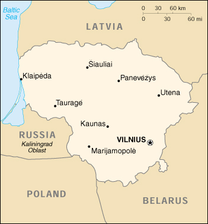

{kind=link}


| Lithuania |
|
|  | |
| Introduction |
Background: Independent between the two World Wars, Lithuania was annexed by the USSR in 1940. In March of 1990, Lithuania became the first of the Soviet republics to declare its independence, but this proclamation was not generally recognized until September of 1991 (following the abortive coup in Moscow). The last Russian troops withdrew in 1993. Lithuania subsequently has restructured its economy for eventual integration into Western European institutions.
| Geography |
Location: Eastern Europe, bordering the Baltic Sea, between Latvia and Russia
Geographic coordinates: 56 00 N, 24 00 E
Map references: Europe
Area:
total:
65,200 sq km
land:
65,200 sq km
water:
0 sq km
Area - comparative: slightly larger than West Virginia
Land boundaries:
total:
1,273 km
border countries:
Belarus 502 km, Latvia 453 km, Poland 91 km, Russia (Kaliningrad) 227 km
Coastline: 99 km
Maritime claims:
territorial sea:
12 nm
Climate: transitional, between maritime and continental; wet, moderate winters and summers
Terrain: lowland, many scattered small lakes, fertile soil
Elevation extremes:
lowest point:
Baltic Sea 0 m
highest point:
Juozapines/Kalnas 292 m
Natural resources: peat, arable land
Land use:
arable land:
35%
permanent crops:
12%
permanent pastures:
7%
forests and woodland:
31%
other:
15% (1993 est.)
Irrigated land: 430 sq km (1993 est.)
Natural hazards: NA
Environment - current issues: contamination of soil and groundwater with petroleum products and chemicals at military bases
Environment - international agreements:
party to:
Biodiversity, Climate Change, Hazardous Wastes, Ozone Layer Protection, Ship Pollution, Wetlands
signed, but not ratified:
Air Pollution-Persistent Organic Pollutants, Climate Change-Kyoto Protocol
| People |
Population: 3,620,756 (July 2000 est.)
Age structure:
0-14 years:
19% (male 357,712; female 342,796)
15-64 years:
67% (male 1,177,732; female 1,259,682)
65 years and over:
14% (male 163,470; female 319,364) (2000 est.)
Population growth rate: -0.29% (2000 est.)
Birth rate: 9.77 births/1,000 population (2000 est.)
Death rate: 12.87 deaths/1,000 population (2000 est.)
Net migration rate: 0.16 migrant(s)/1,000 population (2000 est.)
Sex ratio:
at birth:
1.05 male(s)/female
under 15 years:
1.04 male(s)/female
15-64 years:
0.93 male(s)/female
65 years and over:
0.51 male(s)/female
total population:
0.88 male(s)/female (2000 est.)
Infant mortality rate: 14.67 deaths/1,000 live births (2000 est.)
Life expectancy at birth:
total population:
69.09 years
male:
63.07 years
female:
75.41 years (2000 est.)
Total fertility rate: 1.34 children born/woman (2000 est.)
Nationality:
noun:
Lithuanian(s)
adjective:
Lithuanian
Ethnic groups: Lithuanian 80.6%, Russian 8.7%, Polish 7%, Byelorussian 1.6%, other 2.1%
Religions: Roman Catholic (primarily), Lutheran, Russian Orthodox, Protestant, evangelical Christian Baptist, Muslim, Jewish
Languages: Lithuanian (official), Polish, Russian
Literacy:
definition:
age 15 and over can read and write
total population:
98%
male:
99%
female:
98% (1989 est.)
| Government |
Country name:
conventional long form:
Republic of Lithuania
conventional short form:
Lithuania
local long form:
Lietuvos Respublika
local short form:
Lietuva
former:
Lithuanian Soviet Socialist Republic
Data code: LH
Government type: parliamentary democracy
Capital: Vilnius
Administrative divisions: 44 regions (rajonai, singular - rajonas) and 11 municipalities*: Akmenes Rajonas, Alytaus Rajonas, Alytus*, Anyksciu Rajonas, Birstonas*, Birzu Rajonas, Druskininkai*, Ignalinos Rajonas, Jonavos Rajonas, Joniskio Rajonas, Jurbarko Rajonas, Kaisiadoriu Rajonas, Kaunas*, Kauno Rajonas, Kedainiu Rajonas, Kelmes Rajonas, Klaipeda*, Klaipedos Rajonas, Kretingos Rajonas, Kupiskio Rajonas, Lazdiju Rajonas, Marijampole*, Marijampoles Rajonas, Mazeikiu Rajonas, Moletu Rajonas, Neringa* Pakruojo Rajonas, Palanga*, Panevezio Rajonas, Panevezys*, Pasvalio Rajonas, Plunges Rajonas, Prienu Rajonas, Radviliskio Rajonas, Raseiniu Rajonas, Rokiskio Rajonas, Sakiu Rajonas, Salcininku Rajonas, Siauliai*, Siauliu Rajonas, Silales Rajonas, Silutes Rajonas, Sirvintu Rajonas, Skuodo Rajonas, Svencioniu Rajonas, Taurages Rajonas, Telsiu Rajonas, Traku Rajonas, Ukmerges Rajonas, Utenos Rajonas, Varenos Rajonas, Vilkaviskio Rajonas, Vilniaus Rajonas, Vilnius*, Zarasu Rajonas
Independence: 6 September 1991 (from Soviet Union)
National holiday: Statehood Day, 16 February (1918)
Constitution: adopted 25 October 1992
Legal system: based on civil law system; no judicial review of legislative acts
Suffrage: 18 years of age; universal
Executive branch:
chief of state:
President Valdas ADAMKUS (since 26 February 1998)
head of government:
Premier Andrius KUBILIUS (since 12 November 1999)
cabinet:
Council of Ministers appointed by the president on the nomination of the premier
elections:
president elected by popular vote for a five-year term; election last held 21 December 1997 and 5 January 1998 (next to be held NA 2003); premier appointed by the president on the approval of the Parliament
election results:
Valdas ADAMKUS elected president; percent of vote - Valdas ADAMKUS 50.4%, Arturas PAULAUSKAS 49.6%
Legislative branch:
unicameral Parliament or Seimas (141 seats, 71 members are directly elected by popular vote, 70 are elected by proportional representation; members serve four-year terms)
elections:
last held 20 October and 10 November 1996 (next to be held NA October 2000)
election results:
percent of vote by party - NA; seats by party - TS 69, LKDP 15, LCS 15, LDDP 12, LSDP 10, DP 2, independents 12, others 6
Judicial branch: Supreme Court, judges appointed by the Parliament; Court of Appeal, judges appointed by the Parliament
Political parties and leaders: Christian Democratic Party or LKDP [Algirdas SAUDARGAS, chairman]; Democratic Labor Party of Lithuania or LDDP [Ceslovas JURSENAS, chairman]; Democratic Party or DP [Lydie WURTH-POLFER, president]; Homeland Union/Conservative Party or TS [Vytautas LANDSBERGIS, chairman]; Lithuanian Center Union or LCS [Romualdas OZOLAS, chairman]; Lithuanian Farmer's Party or LUP (previously Farmers' Union) [Albinas VAIZMUZIS, chairman]; Lithuanian Nationalist Union or LTS [Rimantas SMETONA, chairman]; Lithuanian Polish Union or LLS [Rsztardas MACIEKIANIEC, chairman]; Lithuanian Social Democratic Party or LSDP [Aloyzas SAKALAS, chairman]
Political pressure groups and leaders: Lithuanian Future Forum
International organization participation: BIS, CBSS, CCC, CE, EAPC, EBRD, ECE, EU (applicant), FAO, IAEA, IBRD, ICAO, ICC, ICFTU, ICRM, IFC, IFRCS, ILO, IMF, IMO, Intelsat (nonsignatory user), Interpol, IOC, IOM, ISO (correspondent), ITU, OPCW, OSCE, PFP, UN, UNCTAD, UNESCO, UNMIBH, UNMIK, UPU, WEU (associate partner), WHO, WIPO, WMO, WTrO (applicant)
Diplomatic representation in the US:
chief of mission:
Ambassador Stasys SAKALAUSKAS
chancery:
2622 16th Street NW, Washington, DC 20009
telephone:
[1] (202) 234-5860
FAX:
[1] (202) 328-0466
consulate(s) general:
Chicago and New York
Diplomatic representation from the US:
chief of mission:
Ambassador Keith C. SMITH
embassy:
Akmenu 6, 2600 Vilnius
mailing address:
American Embassy, Vilnius, PSC 78, Box V, APO AE 09723
telephone:
[370] (2) 223-031
FAX:
[370] (6) 706-084
Flag description: three equal horizontal bands of yellow (top), green, and red
| Economy |
Economy - overview: Lithuania, the Baltic state that has conducted the most trade with Russia, faced its own economic and financial crisis in 1999 as a result of the government's wrongfooted economic policies and its inadequate response to the August 1998 Russian financial crisis. Preliminary figures indicate 3% negative GDP growth, 10% unemployment - the highest level since independence in 1991 - and a budget deficit estimated at between 8 and 9% of GDP. The policies that Prime Minister KUBILIUS implemented upon taking the helm in November 1999 underscore a commitment to fiscal restraint, economic stabilization, and accelerated reforms. The austere 2000 budget in based on a 2% GDP growth forecast, 3% inflation, and a 2.8% budget deficit. Lithuania was invited at the Helsinki EU summit in December 1999 to begin EU accession talks in early 2000. Privatization of the large state-owned utilities, particularly in the energy sector, and reducing the high current account deficit remain challenges for the coming year.
GDP: purchasing power parity - $17.3 billion (1999 est.)
GDP - real growth rate: -3% (1999 est.)
GDP - per capita: purchasing power parity - $4,800 (1999 est.)
GDP - composition by sector:
agriculture:
10%
industry:
32%
services:
58% (1998 est.)
Population below poverty line: NA%
Household income or consumption by percentage share:
lowest 10%:
3.4%
highest 10%:
28% (1993)
Inflation rate (consumer prices): 0.3% (1999 est.)
Labor force: 1.8 million
Labor force - by occupation: industry 30%, agriculture 20%, services 50% (1997 est.)
Unemployment rate: 10% (1999)
Budget:
revenues:
$1.5 billion
expenditures:
$1.7 billion, including capital expenditures of $NA (1997 est.)
Industries: metal-cutting machine tools, electric motors, television sets, refrigerators and freezers, petroleum refining, shipbuilding (small ships), furniture making, textiles, food processing, fertilizers, agricultural machinery, optical equipment, electronic components, computers, amber
Industrial production growth rate: -14% (1999 est.)
Electricity - production: 15.58 billion kWh (1998)
Electricity - production by source:
fossil fuel:
13.09%
hydro:
4.3%
nuclear:
82.61%
other:
0% (1998)
Electricity - consumption: 7.829 billion kWh (1998)
Electricity - exports: 7 billion kWh (1998)
Electricity - imports: 340 million kWh (1998)
Agriculture - products: grain, potatoes, sugar beets, flax, vegetables; beef, milk, eggs; fish
Exports: $3.3 billion (f.o.b., 1999)
Exports - commodities: machinery and equipment 19%, mineral products 19%, textiles and clothing 19%, chemicals 10%, foodstuffs (1998)
Exports - partners: Russia 17.4%, Germany 15.8%, Latvia 12.7%, Denmark 5.9%, Belarus 5.2% (1999)
Imports: $4.5 billion (f.o.b., 1999)
Imports - commodities: machinery and equipment 30%, mineral products 16%, chemicals 9%, textiles and clothing 9%, foodstuffs (1998)
Imports - partners: Russia 20.4%, Germany 16.5%, Denmark 3.8%, Belarus 2.2%, Latvia 2% (1999)
Debt - external: $NA
Economic aid - recipient: $228.5 million (1995)
Currency: 1 Lithuanian litas = 100 centas
Exchange rates: litai per US$1 - 4.000 (fixed rate since 1 May 1994)
Fiscal year: calendar year
| Communications |
Telephones - main lines in use: 1.048 million (1997)
Telephones - mobile cellular: 297,500 (1998)
Telephone system:
inadequate but is being modernized to provide an improved international capability and better residential access
domestic:
a national fiber-optic cable interurban trunk system is nearing completion; rural exchanges are being improved and expanded; mobile cellular systems are being installed; access to the Internet is available; still many unsatisfied telephone subscriber applications
international:
landline connections to Latvia and Poland; major international connections are to Denmark, Sweden, and Norway by submarine cable for further transmission by satellite
Radio broadcast stations: AM 3, FM 112, shortwave 1 (1998)
Radios: 1.9 million (1997)
Television broadcast stations: 82 (mainly repeater stations) (1998)
Televisions: 1.7 million (1997)
Internet Service Providers (ISPs): 10 (1999)
| Transportation |
Railways:
total:
2,002 km
broad gauge:
2,002 km 1.524-m gauge (122 km electrified) (1994)
Highways:
total:
71,375 km
paved:
64,951 km (including 417 km of expressways)
unpaved:
6,424 km (1998 est.)
Waterways: 600 km perennially navigable
Pipelines: crude oil, 105 km; natural gas 760 km (1992)
Ports and harbors: Kaunas, Klaipeda
Merchant marine:
total:
52 ships (1,000 GRT or over) totaling 316,319 GRT/351,700 DWT
ships by type:
cargo 23, combination bulk 11, petroleum tanker 2, rail car carrier 1, refrigerated cargo 11, roll-on/roll-off 1, short-sea passenger 3 (1999 est.)
Airports: 96 (1994 est.)
Airports - with paved runways:
total:
25
over 3,047 m:
3
2,438 to 3,047 m:
2
1,524 to 2,437 m:
4
914 to 1,523 m:
2
under 914 m:
14 (1994 est.)
Airports - with unpaved runways:
total:
71
2,438 to 3,047 m:
1
1,524 to 2,437 m:
1
914 to 1,523 m:
6
under 914 m:
63 (1994 est.)
| Military |
Military branches: Ground Forces, Navy, Air and Air Defense Force, Security Forces (internal and border troops), National Guard (Skat)
Military manpower - military age: 18 years of age
Military manpower - availability:
males age 15-49:
925,551 (2000 est.)
Military manpower - fit for military service:
males age 15-49:
727,609 (2000 est.)
Military manpower - reaching military age annually:
males:
27,259 (2000 est.)
Military expenditures - dollar figure: $181 million (FY99)
Military expenditures - percent of GDP: 1.5% (FY99)
| Transnational Issues |
Disputes - international: ongoing talks over maritime boundary dispute with Latvia (primary concern is oil exploration rights); 1997 border agreement with Russia not yet ratified
Illicit drugs: transshipment point for opiates and other illicit drugs from Southwest Asia, Latin America, and Western Europe to Western Europe and Scandinavia